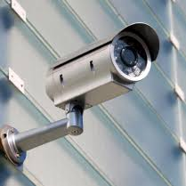
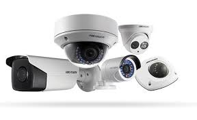

Tech VS Crime
Menu
Surveillance Systems

Millions of closed-circuit television (CCTV) cameras are installed in streets and businesses throughout the world with the stated goal of reducing crime and increasing public safety. The United Kingdom is one of the most enthusiastic proponents, with an estimated 1.9 million cameras in 2011 — one for every 32 U.K. residents — and the number continues to rise. Chicago reportedly has at least 15,000 cameras installed in one of the largest U.S. networks — which has prompted civil liberties groups to express strong concerns — while in New York, cameras are increasingly found both on public transit as well as in businesses and even high-end residences.
The 9/11 attacks led many municipalities to start installing CCTV systems, but sometimes what’s put in place goes beyond the original mandate: For example, Oakland, Calif., took $7 million of federal money intended for safeguarding its port and is using it to create a citywide surveillance system instead. According to industry estimates, the global video surveillance market is expected to grow from $11.5 billion in 2008 to $37.7 billion in 2015. A 2013 New York Times/CBS poll found that 78% of respondents supported the use of surveillance cameras in public places, and authorities tend to point to spectacular successes — for example, crucial images cameras provided of the Boston Marathon bombing suspects or the identification of those responsible for the 2005 London attacks. Still, concerns remain about systems’ potential to violate personal privacy as well as their overall cost-effectiveness. A 2013 Chicago Tribune opinion piece quoted a city spokesman as saying that surveillance cameras helped solve 4,500 crimes over four years, but the writer notes that more than a million are estimated to have taken place over that time period — meaning that the cameras’ contribution was 0.05% at best. CCTV cameras also have the potential of creating unintended effects, good and bad. The “halo effect” refers to the potential for greater security in areas outside the view of cameras; this could be offset by the “displacement effect,” which pushes antisocial activity to other parts of the city. Cameras could also promote a false sense of security and lead citizens to take fewer precautions, or they could also cause more crimes to be reported, and thus lead to a perceived increase in crime. And as with the 2013 revelations of widespread data collection by the U.S. National Security Administration, the indiscriminate gathering of information on law-abiding citizens, however well-intentioned, has the potential for misuse. The Washington Post reported in February 2014 that new aerial video surveillance technologies are being deployed that can monitor virtually everything in an area the size of a small city.
